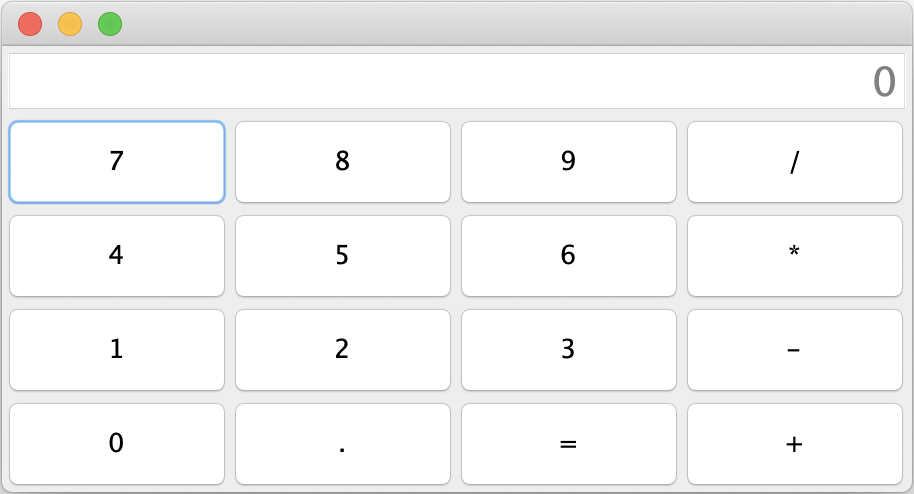

You need to make a calculator that looks like the following pictures:

The difference between the pictures is in the size, i.e. how much we stretched the window.
Everything needs to be implemented in the Calculator class which is in the hr.fer.oop.zi.z4 package.
Note: The template indicates the places with the comment // TODO ... that need to be supplemented.
At the top of the application is a printout of the results and a printout of what was entered (JTextField). In the middle is a panel with buttons.
In the setupLayout method of theCalculator class, create the graphical interface shown in the pictures. You can use the FlowLayout, GridLayout and BoarderLayout classes for layouts.
It is also necessary to define the behavior for all buttons in the registerListeners method. When the number or decimal point button is pressed, the numberPressed method is called, and when the operators are pressed or equal, then the operatorPressed method is called.
In the numberPressed method, it is necessary to create the logic of entering the number. If 0 is printed on the initial printput then 1 and a dot is pressed, then 0. is printed, after which the other digits can be pressed and added to the end. If it is 0 at the beginning and a digit is pressed then the printout is replaced with that digit e.g. if it was 0 printed and we press 5 then 5 is printed. After that we can add other digits.
The operatorPressed method processes operators and equal buttons. After entering the number, the operator is pressed and then another number is entered. Only when pressed equal the result is calculated and printed. After equal we can either start entering a new number or we can press the operator and then that printed number is the first operand.
Complex operations can also be entered into the calculator, e.g. 5 + 4 - 1 = which will first calculate 5 + 4 and subtract 1 from that result and finally print 8.
You are free to add fields and private methods to the Calculator class as needed.